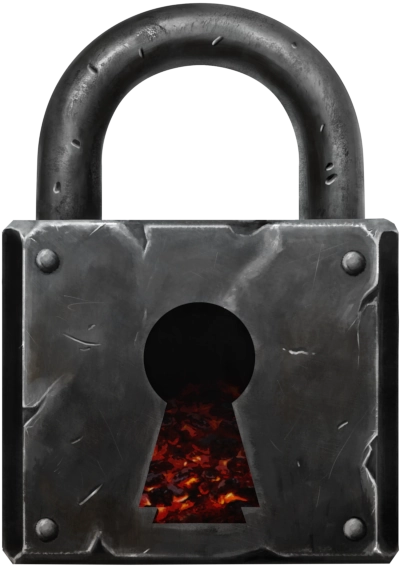

About
Emberlock Games is a single-person independent game development company actively working on releasing its first game, Solar Scavenge Squad!
This is a passion project maintained on nights and weekends, and its goals are modest.
The "Team"
- David Daku: founder, etc.
My day-job career in software engineering grew from an early entrancement with the idea of creating the games that I loved playing. Eventually that led me to creating u6ish, a (tiny) non-commercial open-source game that was developed and released as a hobby, and was a demanding but wonderful experience.
I created Emberlock Games after that, in May of 2024, as a home for the small-scale games I want to create. The company name references friendships I've developed through PC- and board-gaming which have enriched my life in unforeseen ways, and I hope something created here will similarly enrich your life.
Differentiating Philosophy
Games Should Be Flexible
Like a game played with family and friends, house rules have the ultimate say.
Easy, official, in-game configuration options are important, and modding will always be encouraged.
Privacy and Simplicity of Focus
This website is not running any Javascript in your browser; and you haven't been prompted to accept any cookies, because this site is not tracking you. The purpose of this site is to give you information.
This site's technical design is emblematic of the company's focus on privacy and simplicity (as delivered to you, behind the scenes there's an over-engineered and re-invented system building simple HTML documents, because.)
In practice, in SSS the only data collection is basic telemetry and game summaries from game servers to their configured network server. This too can be opted-out-of with a local game server and appropriate configuration.
Build To Last; Stop Killing Games
Cloud-hosted infrastructure adds dependencies and maintenance cost. Cloud-dependent games which don't collect ongoing subscription fees must either somehow monetize their players or eventually go offline.
Given those choices, all official cloud-hosted infrastructure will go offline when it needs to, but not until after providing the players all the tools needed to run their own infrastructure.
All games with any cloud-hosted infrastructure will:
- be supported with official Emberlock Games servers for a limited time after launch, paid for by initial personal investment and game sales
- include with game purchase (available by retail launch of the associated game) self-hosting executables and/or images
- be easily configurable in the client, to ease switching to a different host
Emberlock Games will never require any official server(s) for any game to function.

Contact & Social Media
Please direct inquiries to contact@emberlockgames.com
Connect with Emberlock Games on bluesky or reddit; any other social media accounts are fraudulant.